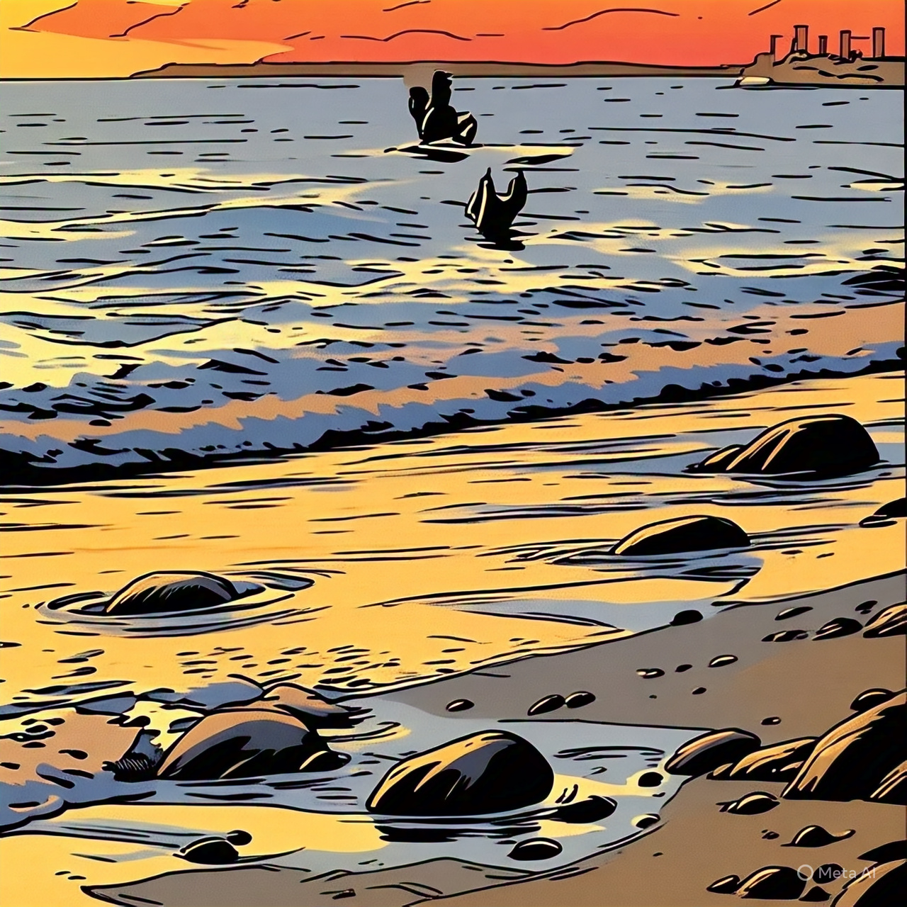

Day 1 in the Unknown land, far far from family and friends for the greater good. Auckland, New Zealand

The city of Auckland, where dreams come true, but there's still time for him...
New Plymouth, the place where his new life was about to begin as he enters the uncharted lands...
Surrounded by Mountains one side, and shining shimmering seas on the other, he slowly gazes as the sun sets low,

2 months later...Covid hit him hard, he was all alone wandering into the unknown

The Phone rings...A Phone call that brought a smile onto his face...

A month later, the prom night, where he took his partner someplace special...

The Perfect Dance... where he held his partner, as they danced all night... as the song played on his phone... Press the button to embrace Maahir's dance

The Final question...Finally the day comes, as he walks into the 2degrees building...for an interview...2degrees...his dream company
knowingly or unknowingly...it has been a huge part of his life...whether it be connecting with his loved ones or helping him cope with his emptiness, loneliness...Is he selected or not...
knowingly or unknowingly...it has been a huge part of his life...whether it be connecting with his loved ones or helping him cope with his emptiness, loneliness...Is he selected or not...